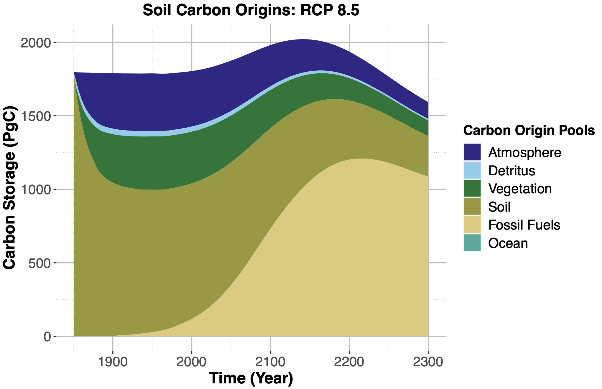
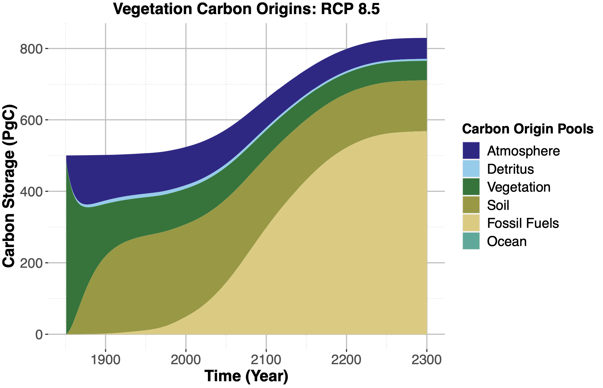
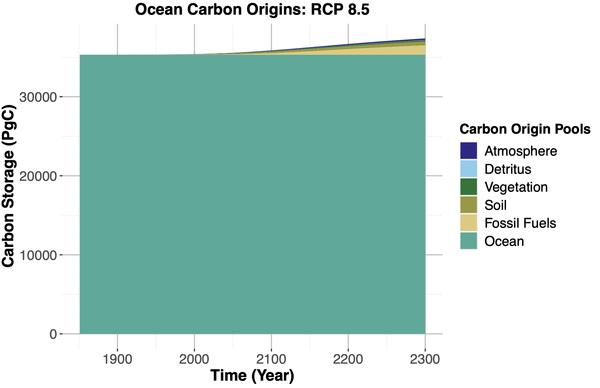
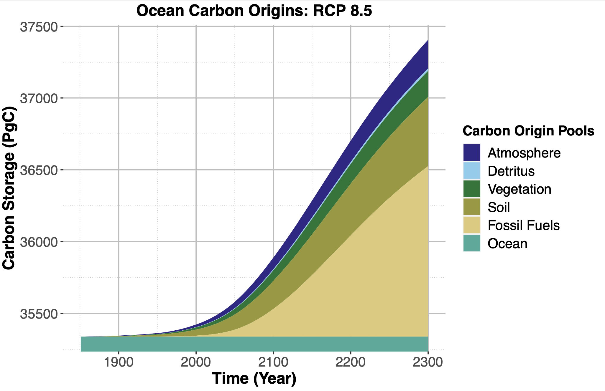

Tracking Carbon Flows through the Biosphere in Hector
Skylar Gering1,2, Benjamin Bond-Lamberty2, Dawn Woodard2
1 Harvey Mudd College, 2 Pacific Northwest National Laboratory
Introduction
Simple climate models (SCMs) are useful tools for exploring the global climate and carbon cycle (Calvin and Bond-Lamberty 2018).
They have reduced computational complexity compared to larger Earth System Models (ESMs), trading a lower temporal and spatial resolution for a significantly faster runtime and reduced computing power.
SCMs make it possible to quickly and efficiently conduct large-ensemble sensitivity studies, model coupling experiments, and policy analyses.
SCMs use data collected from the field and parameters determined from larger model runs in order to investigate the effect of various biogeophysical forcings on the global climate and carbon cycle.
One SCM is the open-source model Hector (Hartin et al. 2015).
Hector has active surface ocean chemistry, multiple terrestrial biomes, and is capable of running a variety of scenarios, including any of the representative concentration pathways (RCP), which show a number of different severity climate change scenarios (Moss et al. 2010).
In a given model run, Hector computes the state of each carbon pool (e.g. atmosphere, soil) based on the flow of carbon between pools as modified by anthropogenic climate change (Figure 1).
Figure 1: Hector's representation of the carbon cycle is split into three boxes, with eight carbon pools in all.
The first box is the atmosphere, which reads in time series for emissions. This then affects the energy balance and affects the land box and the ocean box.
The ocean box is split into four pools: low- and high-latitude surface (both with active chemistry), intermediate water, and deep water.
Finally, the land box represents the movement of carbon from vegetation to detritus and finally to soil.
Hector also allows users to define multiple terrestrial biomes. Image credit: Kalyn Dorheim.
However, Hector does not currently have the capability to track the movement of carbon within the model-meaning that, for example, users cannot reconstruct the original source pools of the carbon in each pool at each timestep.
Instead, it only reports the total carbon stored in each pool at any given time step (Figure 2).
Figure 2: Hector's current output records the overall size of carbon pools-here, the atmosphere, detritus, soil, and vegetation pools-for a RCP 8.5 model run with only one terrestrial biome from 1850 to 2300.
The ocean pool is not plotted above due to its significantly larger carbon storage capabilities.
Note the large increase in atmospheric carbon in this scenario and the moderate increase in vegetation carbon; soil initially increases, but then decreases near the end of the run, likely due to increased decomposition, leading to the soil becoming a carbon source rather than a carbon sink.
Here we describe the addition of a novel tracking capability to Hector's code base.
This allows Hector to track the origin of carbon within each of the model's carbon pools throughout the run, after a specified starting date.
Thus, at the end of the run, each pool's contents can be broken down by the original source pool (defined based on when tracking was enabled), allowing deeper exploration of carbon movement and transfer, and more robust benchmarking.
Below we describe how the code additions work technically, provide example tracking outputs for four major carbon pools, and discuss next steps in development and research.
Implementation and Technical Details
We modified the model's code to record the origin of the carbon within each pool, in addition to keeping track of the total amount of carbon.
When a user enables tracking within a model run, all of the carbon within each pool is marked as originating from that specific pool-e.g., all of the carbon within the atmosphere pool at that moment in time is tagged as originating from the atmosphere.
These tags do not change over time as they are associated with that particular mass of carbon, and follow the carbon as fluxes move it throughout the model.
Fluxes are created from an existing pool and have the same origin proportions as the pools they originate from-i.e., if we create a 25 petagram carbon flux from the atmosphere, we assume that the atmosphere pool is well-mixed and remove carbon in equal proportions from each of the origin sub-pools within the atmosphere.
The resulting 25 Pg C flux thus has the exact same origin fractions as the atmosphere at that point in time.
The addition of a flux to pool is what changes the origin proportions of that pool.
For example, if we add a 25 petagram flux of carbon from the atmosphere pool to the vegetation pool, 25 petagrams of carbon will be added to the total value of the vegetation pool, and the origin proportions of that flux carbon (which as noted above matches that of the atmosphere) are added to the vegetation pool's list of origins for its already existing carbon.
Subtraction is simpler as we continue our assumption that the pools are well mixed: we remove carbon from the pool in equal proportions to the carbon within the pool, simply decreasing the total value of carbon.
In this way, each pool keeps track of where its carbon originated from and we are able to watch the pools' composition change over time through these pool-to-pool transfers.
Figure 3: Flux creation, pool and flux addition, and pool and flux subtraction within Hector when tracking.
Fluxes are created from existing pools and represent carbon leaving one pool and moving to another.
When a flux is created (shown above through multiplication), it has the same origin fractions as the pool it is created from.
When a flux and a pool are added, the total value of the pool increases and its carbon origin fractions are updated to include the carbon introduced by the flux.
When carbon is subtracted from a pool, it is removed proportionally from the pool due to our well-mixed assumption.
Hector tracks carbon in the atmosphere, vegetation, soil, detritus, and ocean; Hector can also run multiple terrestrial biomes.
We can also add additional pools, like fossil fuels, whose carbon we want to track.
Each of these pools is initialized with a starting amount of carbon at the beginning of a run and tracking is turned on at a time specified by the user.
For each time step within a run, we calculate all expected fluxes into and out of each pool (e.g. net primary production and land use change) and add/subtract these fluxes from our pools.
When tracking is on, the origin of the carbon in each pool is updated as described above.
If tracking is not on, the total amount of carbon within the pool is changed but the origin proportions stay the same.
This process, with a few additional adjustments, repeats every timestep.
If you would like more detailed technical information, please contact the author.
We also want to note that all of the changes to Hector's code are backwards compatible with previous versions of Hector and running Hector with tracking is completely optional.
When tracking is not enabled, adding and subtracting fluxes from a pool just functions as standard arithmetic operations that only keep track of the pool's overall value and not the carbons' origin fractions.
Current Progress
Currently tracking is implemented for atmosphere, vegetation, soil, detritus, and the ocean.
Below we show our tracking results from each of these pools, excluding detritus due to its small size.
All of the plots below were created by running Hector using RCP 8.5, a high emissions pathway (and therefore the most interesting carbon tracking results).
Also note that we tracked from 1850 to 2300. However, Hector is only calibrated to 2100, so the findings after 2100 should be taken as provisional.
We include the results between 2100 to 2300 to demonstrate interesting behavior within the soil pool.
Note that at the beginning of each run, every pool of carbon is composed entirely of carbon from that pool, and thus the initial fluxes of carbon start off with high proportions of carbon from a single pool before they equilibrate.
Thus in the first several years of the run, we can see a rapid rebalancing effect until the pools come into more of a steady state with respect to the distribution of source carbon in each pool.
At the same time, an increasing amount of carbon from fossil fuels is being added to the system, which we can see especially in atmosphere, soil, and vegetation pools in Hector relative to their size.
Figure 4: Total value of carbon from each origin pool within the atmosphere over time.
After 1900, atmospheric carbon grows quickly due to an influx of fossil fuel carbon.
Over the course of the run, the amount of carbon from the atmosphere, detritus, vegetation, and soil stays largely the same within the atmosphere pool.
Animation 1: This animation shows the increasing proportion of the atmosphere carbon pool that is made up of carbon from fossil fuels.
As the animation progresses and the amount of carbon stored in the atmosphere rises, the proportion of carbon from fossil fuels goes from a negligible percent to a majority of the carbon within the pool.

Figure 5: The total amount of carbon in the soil first increases up to around year 2150 and then decreases due to first increasing land carbon sequestration (because of rising CO2) and then increasing losses (due to rising temperatures and saturation of CO2 fertilization).
At this point, soil turns from a carbon sink into a carbon source. We see in this figure as well that the amount of fossil fuel carbon within the pool grows rapidly after 1900, leading to over half of the pool comprised of carbon originating from fossil fuels by the later half of the run.
Animation 2: This animation show the increasing proportion of carbon in the soil pool originating from fossil fuels over time.
Note that shortly after 2100, the total amount of carbon in the soil dips down dramatically.
Although the run after 2100 is not calibrated and thus we need to be careful drawing conclusions, we make the hypothesis that this happens due to the soil pool turning into a carbon source rather than a sink as explained in Figure 5.
Note that even when the overall carbon in the soil starts to decline, the proportion of the carbon from fossil fuels does not decrease.

Figure 6: In the above figure, we see that the total amount of carbon increase from 1850 to 2100 within the vegetation pool and a large amount of this increase is due to the influx of fossil fuel carbon.
We see that by 2300 the vegetation pool seems to be nearing a steady state.
However, note again that Hector is only calibrated through 2100, at which point the level of carbon stored within vegetation is still growing rapidly.
Animation 3: This animation shows the increasing proportion of the vegetation pool made up from carbon origination from fossil fuels even as the overall amount of carbon in of the vegetation pool grows.
We can see this as the piechart representing origin of carbon within the vegetation pool becomes a majority from fossil fuels by 2100.

Figure 7: Note that due to its large size as a carbon sink, the carbon entering the ocean over the course of a run barely affects the overall composition of the pool.
However, we do see that there is increased levels of carbon in the pool in the later half of the run.
For greater details on the composition of this new carbon, see Figure 8.
Due to the way that ocean-atmosphere flux is currently implemented, for most time steps we only have flux from atmosphere to ocean as we take take the “overall” flux between the two pools and just move carbon in one direction.
Since the atmosphere to ocean flux tends to be larger than ocean to atmosphere, this currently does not allow carbon originating in the ocean to percolate to other pools.
Additionally, for tracking, the ocean is currently represented as a singular pool rather than being split into four pools like in the box model.

Figure 8: This graph shows the influx of carbon into the ocean pool over the course of one model run.
We see that despite the amount appearing very small in Figure 7, we have actually added over 2,000 petagrams of carbon to the ocean pool.
Additionally, note that around half of the added carbon is from fossil fuels.
Animation 4: First, not the high level of carbon stored within the ocean.
Thus, while around 2,000 petagrams are added over the course of this run, proportionally, that represents a small amount of the carbon stored within the ocean.
This can be seen through the slow change of the pie chart throughout the animation even as the total amount of carbon rises.
Conclusion and Next Steps
As far as we are aware, there are no other climate models-either simple or complex Earth System Models-with this type of tracking functionality.
The addition of tracking to Hector thus creates a novel opportunity to explore more detailed carbon movement within the model and carryout robust benchmarking.
For example, this new capability allows computation of the model's airborne fraction (Knorr 2009), a crucial carbon-cycle diagnostic that reflects how much of anthropogenic emissions remain in the atmosphere.
Hector's carbon tracking also provides the foundational infrastructure needed for a future implementation of radiocarbon (He 2016).
Additionally, tracking allows careful examination of the path and location of carbon from anthropogenic carbon sources, or natural system changes such as permafrost thaw (Woodard 2021), over time.
Finally, we also envision this functionality being used in integrated assessments models (IAM) to examine how new economic policies may affect the carbon cycle.
We are hopeful that this tracking functionality will become a standard part of Hector when Version 3 is released.
Additionally, we are working towards a manuscript in the second half of 2021.
Sources
Calvin, K., & Bond-Lamberty, B. (2018). Integrated human-earth system modelingstate of the science and future directions. Environmental Research Letters, 13(6), 063006.
Hartin, C. A., Patel, P., Schwarber, A., Link, R. P., & Bond-Lamberty, B. P. (2015). A simple object-oriented and open-source model for scientific and policy analyses of the global climate system–Hector v1. 0. Geoscientific Model Development, 8(4), 939-955.
He, Y., Trumbore, S. E., Torn, M. S., Harden, J. W., Vaughn, L. J., Allison, S. D., & Randerson, J. T. (2016). Radiocarbon constraints imply reduced carbon uptake by soils during the 21st century.Science, 353(6306), 1419-1424.
Knorr, W. (2009). Is the airborne fraction of anthropogenic CO2 emissions increasing?. Geophysical research letters, 36(21).
Moss, R. H., Edmonds, J. A., Hibbard, K. A., Manning, M. R., Rose, S. K., Van Vuuren, D. P., ... & Wilbanks, T. J. (2010). The next generation of scenarios for climate change research and assessment. Nature, 463(7282), 747-756.
Woodard, D. L., Shiklomanov, A. N., Kravitz, B., Hartin, C., & Bond-Lamberty, B. (2021). A Permafrost Implementation in the Simple Carbon-Climate Model Hector. Geoscientific Model Development Discussions, 1-21.